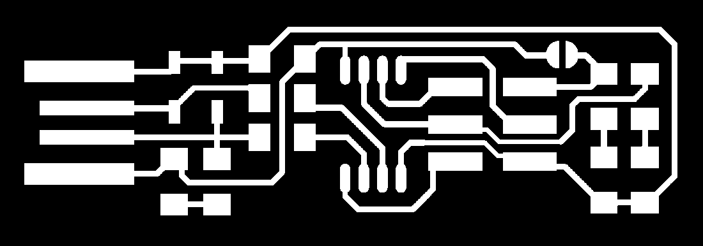

PCB is an acronym for printed circuit board. It is a board that has lines and pads that connect various points together. A PCB allows signals and power to be routed between physical devices. Solder is the metal that makes the electrical connections between the surface of the PCB and the electronic components. Being metal, solder also serves as a strong mechanical adhesive.
A PCB is sort of like a layer cake there are alternating layers of different materials which are laminated together with heat and adhesive such that the result is a single object.
FR4
The base material, or substrate, is usually fiberglass. Historically, the most common designator for this fiberglass is "FR4". This solid core gives the PCB its rigidity and thickness. There are also flexible PCBs built on flexible high-temperature plastic (Kapton or the equivalent).
Copper
The next layer is a thin copper foil, which is laminated to the board with heat and adhesive. On common, double sided PCBs, copper is applied to both sides of the substrate. In lower cost electronic gadgets the PCB may have copper on only one side. When we refer to a double sided or 2-layer board we are referring to the number of copper layers (2) in our lasagna. This can be as few as 1 layer or as many as 16 layers or more.
Soldermask
The layer on top of the copper foil is called the soldermask layer. This layer gives the PCB some color. It is overlaid onto the copper layer to insulate the copper traces from accidental contact with other metal, solder, or conductive bits. This layer helps the user to solder to the correct places and prevent solder jumpers.
Silkscreen
The white silkscreen layer is applied on top of the soldermask layer. The silkscreen adds letters, numbers, and symbols to the PCB that allow for easier assembly and indicators for humans to better understand the board. We often use silkscreen labels to indicate what the function of each pin or LED.
Terminology
Now that you've got an idea of what a PCB structure is, let's define some terms that you may hear when dealing with PCBs:
Annular ring
- the ring of copper around a plated through hole in a PCB.
DRC
- design rule check. A software check of your design to make sure the design does not contain errors such as traces that incorrectly touch, traces too skinny, or drill holes that are too small.
Drill hit
- places on a design where a hole should be drilled, or where they actually were drilled on the board. Inaccurate drill hits caused by dull bits are a common manufacturing issue.
Finger
- exposed metal pads along the edge of a board, used to create a connection between two circuit boards. Common examples are along the edges of computer expansion or memory boards and older cartridge-based video games.
Mouse bites
- an alternative to v-score for separating boards from panels. A number of drill hits are clustered close together, creating a weak spot where the board can be broken easily after the fact. See the SparkFun Protosnap boards for a good example.
Pad
- a portion of exposed metal on the surface of a board to which a component is soldered.
Panel
- a larger circuit board composed of many smaller boards which will be broken apart before use. Automated circuit board handling equipment frequently has trouble with smaller boards, and by aggregating several boards together at once, the process can be sped up significantly.
Paste stencil
- a thin, metal (or sometimes plastic) stencil which lies over the board, allowing solder paste to be deposited in specific areas during assembly.
Pick-and-place
- the machine or process by which components are placed on a circuit board.
Plane
- a continuous block of copper on a circuit board, define by borders rather than by a path. Also commonly called a "pour".
Plated through hole
- a hole on a board which has an annular ring and which is plated all the way through the board. May be a connection point for a through hole component, a via to pass a signal through, or a mounting hole.
Pogo pin
- spring-loaded contact used to make a temporary connection for test or programming purposes.
Reflow
- melting the solder to create joints between pads and component leads.
Silkscreen
- the letters, number, symbols, and imagery on a circuit board. Usually only one color is available, and resolution is usually fairly low.
Slot
- any hole in a board which is not round. Slots may or may not be plated. Slots sometimes add to add cost to the board because they require extra cut-out time.
Solder paste
- small balls of solder suspended in a gel medium which, with the aid of a paste stencil, are applied to the surface mount pads on a PCB before the components are placed. During reflow, the solder in the paste melts, creating electrical and mechanical joints between the pads and the component.
Solder pot
- a pot used to quickly hand solder boards with through hole components. Usually contains a small amount of molten solder into which the board is quickly dipped, leaving solder joints on all exposed pads.
Soldermask
- a layer of protective material laid over the metal to prevent short circuits, corrosion, and other problems. Frequently green, although other colors (SparkFun red, Arduino blue, or Apple black) are possible. Occasionally referred to as "resist".
Solder jumper
- a small, blob of solder connecting two adjacent pins on a component on a circuit board. Depending on the design, a solder jumper can be used to connect two pads or pins together. It can also cause unwanted shorts.
Surface mount
- construction method which allows components to be simply set on a board, not requiring that leads pass through holes in the board. This is the dominant method of assembly in use today, and allows boards to be populated quickly and easily.
Thermal
- a small trace used to connect a pad to a plane. If a pad is not thermally relieved, it becomes difficult to get the pad to a high enough temperature to create a good solder joint. An improperly thermally relieved pad will feel "sticky" when you attempt to solder to it, and will take an abnormally long time to reflow.
Thieving
- hatching, gridlines, or dots of copper left in areas of a board where no plane or traces exist. Reduces difficulty of etching because less time in the bath is required to remove unneeded copper.
Trace
- a continuous path of copper on a circuit board.
V-score
- a partial cut through a board, allowing the board to be easily snapped along a line.
Via
- a hole in a board used to pass a signal from one layer to another. Tented vias are covered by soldermask to protect them from being soldered to. Vias where connectors and components are to be attached are often untented (uncovered) so that they can be easily soldered.
Wave solder
- a method of soldering used on boards with through-hole components where the board is passed over a standing wave of molten solder, which adheres to exposed pads and component leads.
Design rules
In the class of the FabAcademy they taught us the basic components of a PCB, how it is composed, what electronic components we can place, how to weld, how to create a PCB design in the computer, characterize a PCB and how to engrave it and cut it in the modela.
To weld we use the following welding station, which we set at 341º, recommended temperature to start welding as a rookie and do not overburden the welding.
Previously, I already knew how to weld but only normal components, never something so small. You must have patience and have slept well the night before, otherwise your hand will shake a lot. In the following photos you can see my first surface mount welding.
The Roland Modela MDX-20 is a desktop 3D scanning and milling machine that is compatable with many popular 3D CAD software. The machine can be used to mill ABS, acrylic, wood, plaster, styrene foam, chemical wood, wax, and light metals such as aluminum and brass. The Modela software can accept .STL, .DXF, and .MDJ file types.
Specifications
Maximum Working Area: 203.2 mm (X) x 152.4 mm (Y) x 60.5 mm (Z)
Then we use the Model MDX-20 3D Milling Machine to record and cut the practice as a team.
It is necessary to change the tip if you want to engrave or cut a PCB, for this we must remove the tip you have, using an allen key and carefully loosen the screw to release the tip and remove it. Help me with a sponge so that the tip would not fall flat and flatten.
As part of the practice, we take the following file in .PNG format to be able to record it on the machine.
Then we enter the site fabmodules.org which is a web application that allows us to convert our circuit design .PNG to .RML, which can be interpreted by the Modela MDX-20 3D Milling Machine.
First we must load our image, then select the output format, which should be .RML (Roland mill), then select the type of processing, which in this case must first be the engraving, PCB Traces (1/64)
We configure the parameters in the right panel. We apply offset, we tested with 4 so that the tracks would not be so thin and thus facilitate welding.
After obtaining the .RML file, we must load it to the model, for this we follow the following steps:
Start the machine with the power button
Place the engraving tip and adjust it
Press the view button to locate the tip in the coordinate 0,0
Lower the tip on the Z axis with the UP and DOWN buttons in order to locate it better
5. Open the RolandMDX_20ControlPanelCode software
Adjust the tip closest to the PCB, to such an extent that you begin to make the engraving. With the help of a sheet of paper, we place it just below the tip and lower it little by little until it tears the blade and releases
In the software we establish the coordinates of origin X and Y
We load our file in format (.RML)
The program will begin to make the engraving of our design
This are files for the traces and the board outline:

So upload the original file to the fabmodules web application and proceed to convert it to .RML
Then we opened the Roland machine software and loaded our file.
Everyone recorded their PCB on the same plate, but there was a problem, the model did not allow us to cut the PCB, so we decided to use a tape to cut each plate.
After cutting my PCB, I had to sand to remove burrs and clean the tracks. This is the result:
Next, I had to profile my PCB by cutting it as it should have been with the Modela. So help me with a Dremel and a press to hold it.
Assembling the PCB
The components for the circuit are the following:
1x ATtiny45 or ATtiny85
2x 1kΩ resistors
2x 499Ω resistors
2x 49Ω resistors
2x 3.3v zener diodes
1x red LED
1x green LED
1x 100nF capacitor
1x 2x3 pin header
To corroborate, the resistances were measured with the multimeter. In order to help me to weld and not confuse the pieces, I decided to put them in order stuck a tape.
So I soldered the components on my PCB
The result was the following, but I was wrong in 2 resistances, so I had to desolder them to be able to fit them correctly and weld them well.